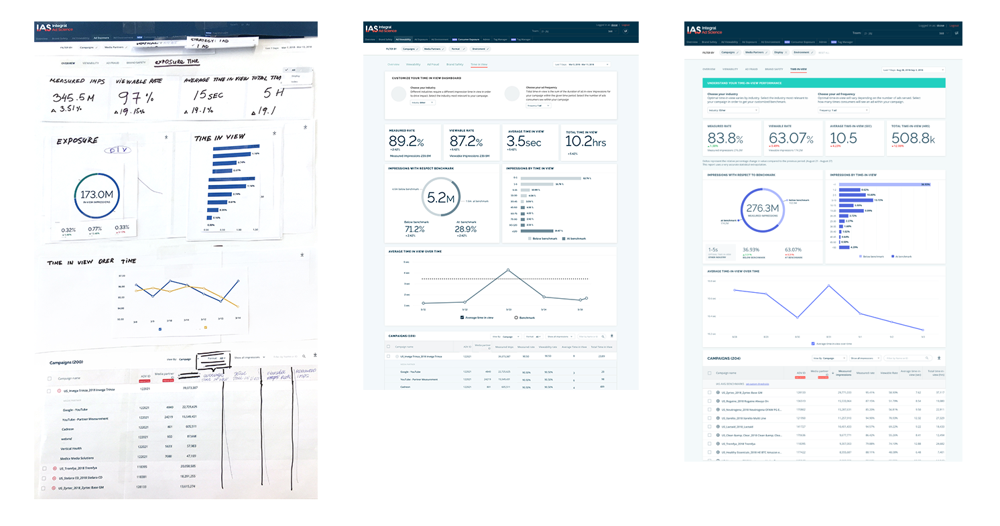
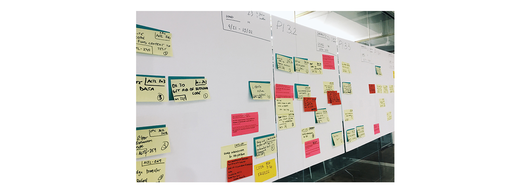

After I had a better understanding of user goals and behaviors, I did a quick exploration to make sure I could fit a new dashboard into existing UI without breaking anything. I've researched which existing UI components can be re-used and which ones require a low effort to modify. Next step was a paper prototyping workshop with the product and R&D leadership to quickly figure out what is possible within the timeframe and to make sure all the business goals are met.
After the collaborative session I've converted paper mock-up into a high fidelity wireframe. I've added some interactivity to clarify all usage scenarios and edge cases. We've reviewed the results with the Scrum team to make sure there are no red flags or anything that could cause significant delays.
While under a tight deadline, I've opted out to do guerrilla testing sessions. Using rough Invision prototypes I've tested with internal super users to make sure our concept is easy to understand.
I've worked with the Scrum team to appropriately break down the work for our team and identify the dependancies. I've continued working closely with the team until the dashboard was launched.
In order to inform improvements for the next SAFe increment I've decided track page visits in combination with page interactions, retention rate and time spend on a page. After a few weeks of usage we scheduling follow up interviews with super-users to get qualitative feedback.